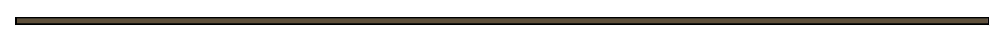
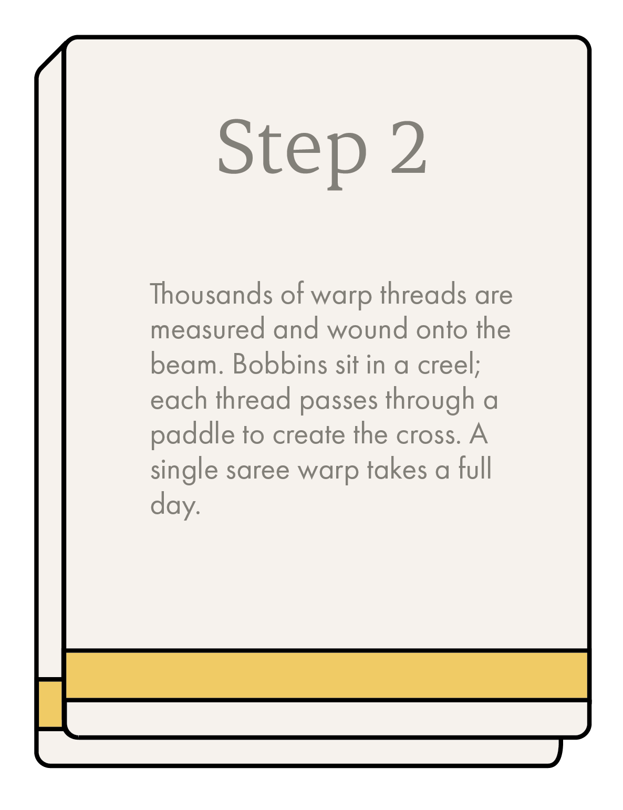

SIX STEPS,
ONE SAREE
Each cloth that leaves Eravathody has passed through every one of these stages — by hand, every time.





EVERY PIECE IS MADE LIKE THIS
No machines. No shortcuts. The Handloom Mark on every cloth from Eravathody is a guarantee that these six steps happened exactly as described — by hand, by the people you can meet here.